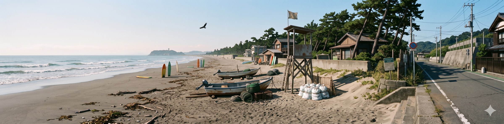
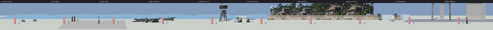
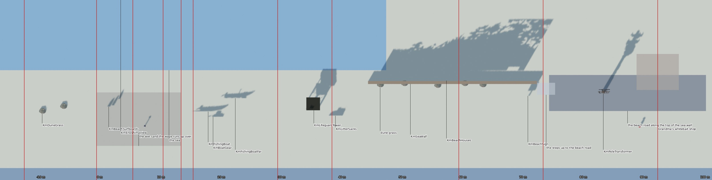

The second leg of route 2, the Shonan Coast: off the boardwalk and along the beach at Yuigahama, past the surfboards stuck in the sand, the fishing boats on their rollers, the lifeguard tower and the litter sacks, along the sea wall under the beach houses, up the steps to the beach road and Grandma's shop. It is laid out from your KM2-2 picture, in the order of its five lane pictures, for your approval.
About 105 m from the boardwalk's end to Grandma's door. Your picture shows the sea's horizon, so every piece takes its size from how far its foot stands below it: the boats come out 4.9 and 5.1 m long, the tower 4.7 m to its roof, the sea wall 1.75 m above its dune.
The see-through boxes are what is still to come: the steps up to the road and Grandma's shop come from KM2-3's picture, where the shop is.

Each model at its real size and place, seen through the game camera as the game frames it, the play lane at the front. See-through boxes are what is still to come. The shading is Blender's, not the game's toon look: judge the places, sizes, order and gaps.


| x (m) | What happens |
|---|---|
| -12 | start: off the boardwalk onto the sand (KM2-1 stops here) |
| 0 | the Tide: the wave runs up over the path from x 0 to 14; wait for it to draw back, or run |
| 6 | gulls standing on the sand (KM-N10), lifting off as the kid comes; one crosses over the sea |
| 11 | an egret wading at the water's edge (KM-N11) |
| 14 | shore crabs at the tide line (KM-N27): they scuttle sideways from the ball |
| 16 | a black kite circling over the boats (KM-N05) |
| 30 | checkpoint |
| 39 | a crow at the litter sacks (KM-N06): it hops off, then back |
| 60 | checkpoint |
| 74 | up the steps to the beach road |
| 93 | Grandma's whitebait shop: the stop (KM2-3 is the errand there) |
| x (m) | Model | Why there |
|---|---|---|
| -9.0 | KmDuneGrass | dune grass at the boardwalk's end (KM-G23) |
| -5.5 | KmDuneGrass | dune grass |
| 2.0 | KmBeachSurfboards | three surfboards stuck upright in the sand (KM-A36, cut-outs) |
| 4.0 | KmEnoshimaView | Enoshima and the hills beyond the bay, on the horizon (a cut-out, its foot at the game camera's eye) |
| 18.5 | KmFishingBoat | the near fishing boat on its rollers (KM-B20, a cut-out) |
| 19.3 | KmBoatGear | its crab traps and net (KM-A37), fish boxes (KM-A35) and coiled ropes |
| 23.0 | KmFishingBoatFar | the far fishing boat on its rollers, its net (KM-B20, a cut-out) |
| 36.0 | KmLifeguardTower | the lifeguard tower with its ladder and flag (KM-B21) |
| 39.6 | KmLitterSacks | the sacks of collected litter and their bamboo fence: a crow at them (KM-N06) |
| 47.0 | KmDuneGrass | dune grass at the sea wall's foot (KM-G23) |
| 51.0 | KmDuneGrass | dune grass at the sea wall's foot (KM-G23) |
| 52.0 | KmSeaWall | the sea wall in streaked concrete (KM-B23) |
| 56.5 | KmDuneGrass | dune grass at the sea wall's foot (KM-G23) |
| 58.0 | KmBeachHouses | the beach houses and black pines above the sea wall (a cut-out) |
| 61.0 | KmDuneGrass | dune grass at the sea wall's foot (KM-G23) |
| 64.0 | KmDuneGrass | dune grass at the sea wall's foot (KM-G23) |
| 66.0 | KmSeaWall | the sea wall |
| 71.5 | KmBeachSign | the beach's rules board on its post, by the steps (a cut-out) |
| 84.0 | KmPoleTransformer | a pole by the road |
| 7.0 | (to come) | the wet sand the wave runs up over (the Tide hazard: x 0 to 14) |
| 12.0 | (to come) | the sea (the Tide hazard's sea behind the lane), as far as the tower |
| 74.5 | (to come) | the steps up to the beach road (KM-B23's steps, from KM2-3's picture) |
| 88.0 | (to come) | the beach road along the top of the sea wall |
| 93.0 | (to come) | Grandma's whitebait shop (KM-B22, from KM2-3's picture): the stop |